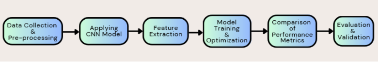
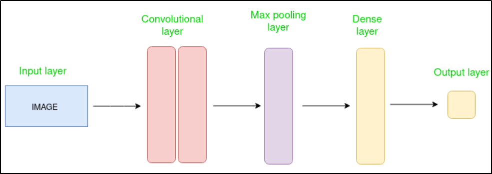
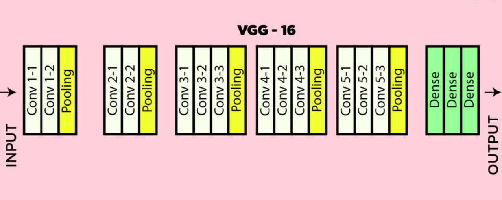
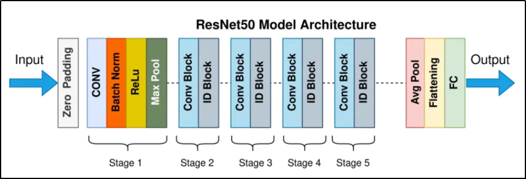
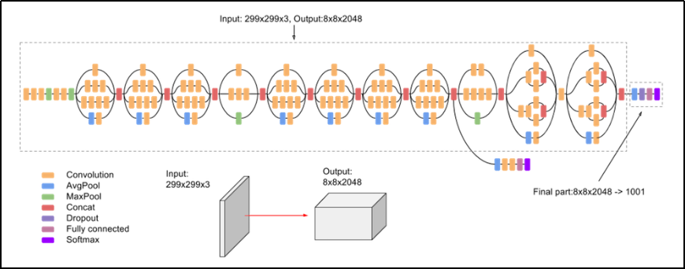
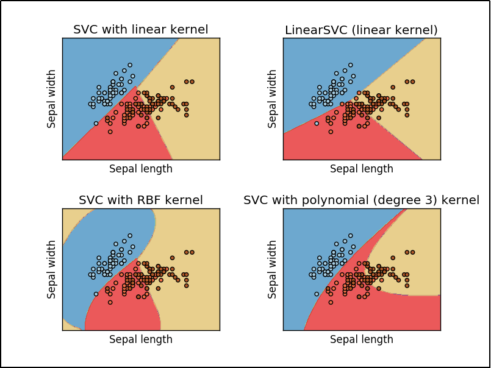
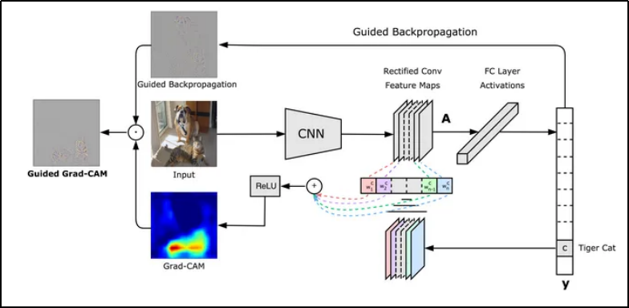

Brain tumors are among the most life-threatening conditions, and timely, accurate diagnosis is essential for effective treatment. Traditionally, MRI scans are manually interpreted by radiologists—a process that can be time-consuming and prone to human error. This project explores the use of deep learning for automated brain tumor classification, comparing two powerful approaches: Convolutional Neural Networks (CNNs) and Vision Transformers (ViTs).
While CNNs excel at extracting spatial features, they often miss long-range dependencies. ViTs, on the other hand, capture global image relationships through self-attention but typically require large datasets, which are scarce in medical imaging. This study directly compares these models using real MRI data to understand their strengths, limitations, and clinical potential.
The models aim to classify brain tumors into four categories: Glioma, Meningioma, Pituitary Tumor, and No Tumor, and are evaluated based on accuracy, robustness, and computational efficiency. GradCAM is used to visualize which regions of the MRI influenced predictions, improving transparency.
The study introduces a hybrid model—deep feature extraction + SVM—which outperforms standalone models in accuracy. Despite challenges like limited dataset diversity and computational demands for ViTs, this research marks a significant step toward real-world, AI-powered diagnostic tools in healthcare.
This project follows a structured approach to classify brain tumors from MRI images using deep learning models. The methodology involves key stages, including data acquisition, preprocessing, model selection, training, and evaluation. Below is a detailed explanation of the steps and underlying theories behind each chosen algorithm.
Theoretical Background

Convolutional Neural Networks (CNNs)
Convolutional Neural Networks (CNNs) are deep learning models widely used for image classification, making them ideal for tasks like brain tumor detection. They automatically extract hierarchical spatial features from MRI images through layers of convolution, pooling, and fully connected layers.
- Convolutional Layers: Use filters to detect patterns such as edges, textures, and complex shapes.
- ReLU Activation: Introduces non-linearity, improving learning efficiency and mitigating vanishing gradients.
- Pooling Layers: (e.g., max pooling) Reduce feature map dimensions while preserving key information, improving computational efficiency.
- Fully Connected Layers: Interpret extracted features and classify tumors into categories.

Figure: Simple CNN Architecture
CNNs serve as a strong baseline in this project, delivering robust results and forming the backbone of the hybrid CNN+SVM approach.
VGG16
VGG-16 is a deep convolutional neural network (CNN) developed by the Visual Geometry Group at the University of Oxford. It features 16 layers, including 13 convolutional and 3 fully connected layers. Known for its simplicity and strong performance, VGG-16 excels in image classification and object recognition tasks.

Figure: VGG16 Model Architecture
ResNet50
ResNet50 is a powerful image classification model that can be trained on large datasets and achieve state-of-the-art results. One of its key innovations is the use of residual connections, which allow the network to learn a set of residual functions that map the input to the desired output.

Figure: ResNet50 Model Architecture
InceptionV3
Inception-v3 is a convolutional neural network architecture from the Inception family that makes several improvements including using Label Smoothing, Factorized 7 x 7 convolutions, and the use of an auxiliary classifier to propagate label information lower down the network (along with the use of batch normalization for layers in the side head)

Figure: InceptionV3 Model Architecture
Support Vector Machine (SVM)
A Support Vector Machine (SVM) is a discriminative classifier formally defined by a separating hyperplane. In other words, given labeled training data (supervised learning), the algorithm outputs an optimal hyperplane which categorizes new examples. In two dimensional space this hyperplane is a line dividing a plane in two parts where in each class lay on either side.
The advantages of support vector machines are:
- Effective in high dimensional spaces.
- Still effective in cases where the number of dimensions is greater than the number of samples.
- Uses a subset of training points in the decision function (called support vectors), so it is also memory efficient.
- Different Kernel functions can be specified for the decision function so it is versatile.
A SVM can have different types of kernels. The kernels signify the type of decision boundary that will be used for the classification tasks:

Figure: SVM with Varying Kernels
Vision Transformers (ViTs)
Vision Transformers (ViTs) are advanced deep learning models that apply self-attention mechanisms to vision tasks. Unlike CNNs, ViTs divide images into patches, treat them as sequential tokens, and learn both local and global features through multiple transformer layers.
Each image patch is embedded and passed through a transformer encoder using components like multi-head self-attention, MLPs, and layer normalization. This architecture allows ViTs to model long-range dependencies and spatial relationships more effectively than CNNs.
While ViTs offer strong performance, especially in medical imaging, they require more computational power. Recent models like RanMerFormer improve efficiency using token merging and random vector functional-link (RVFL) networks for better classification.
ViTs are particularly suited for brain tumor detection due to their ability to understand complex image patterns at scale.

Figure: Vision Transformer Architecture
GradCAM
Gradient weighted Class Activation Map(Grad-CAM) is a method by which we can visualize the regions of an image which influenced the decision making process of a particular CNN model. The structure is shown below:

Figure: GradCAM Structure
In Grad-CAM, the spatial location information of the object is preserved which is lost in a fully connected layer. So the last convolution layer is used as its neurons identify parts specific to that class.
Data Sources & Preprocessing
The dataset used for training and evaluation includes publicly available MRI scans from the Brain Tumor Image Segmentation (BraTS) dataset, TCGA-GBM, and TCGA-LGG datasets. Preprocessing techniques such as normalization, data augmentation (rotation, flipping, contrast adjustments), and image resizing (224x224 for CNNs, 299x299 for InceptionV3) were applied to standardize and enhance image quality. Additionally, noise reduction methods like Gaussian filtering were employed to improve model robustness.
Model Architectures
The models used in this project include three CNN architectures: VGG16, ResNet50, and InceptionV3, each known for its performance in image classification tasks. VGG16 is a deep and simple architecture, ResNet50 utilizes residual connections to enhance learning in deep networks, and InceptionV3 improves performance through multi-size filters and auxiliary classifiers.
For the Vision Transformer models, ViT-B/32 and FastViT were selected due to their ability to process global dependencies in images through self-attention mechanisms. These models provide an alternative to traditional CNNs, focusing on capturing spatial relationships across larger regions in the MRI scans.
Training Process
The training was conducted using Google Colab, equipped with NVIDIA A100 GPUs to accelerate computations. TensorFlow and PyTorch were used to implement the models, while optimizers such as Adam and AdamW were applied to fine-tune the pre-trained models. The dataset was split into training (80%), validation (10%), and test (10%) sets, with early stopping used to prevent overfitting during training. Hyperparameter tuning was performed using random search to find the optimal settings for model performance.
Evaluation & Performance Metrics
The models were evaluated using several metrics, including accuracy, precision, recall, F1-score, and Area Under the ROC Curve (AUC). These metrics provided insight into how well each model could classify the different tumor categories (Glioma, Meningioma, Pituitary Tumor, and No Tumor). A confusion matrix was also generated to visualize misclassifications and identify areas for improvement.
Grad-CAM & Model Interpretability
To improve the interpretability of the models, Grad-CAM was employed to create heatmaps that highlight the regions of MRI images most responsible for each model's predictions. This technique provides valuable insights into model behavior, making the results more understandable and trustworthy for medical practitioners.
Hybrid Models & Architectural Improvements
The project also explored hybrid models, combining CNN feature extraction with ViT's attention mechanisms, to improve classification performance. The deep feature extraction + SVM hybrid approach achieved the highest accuracy of 97%, outperforming both standalone CNN and ViT models in this task.